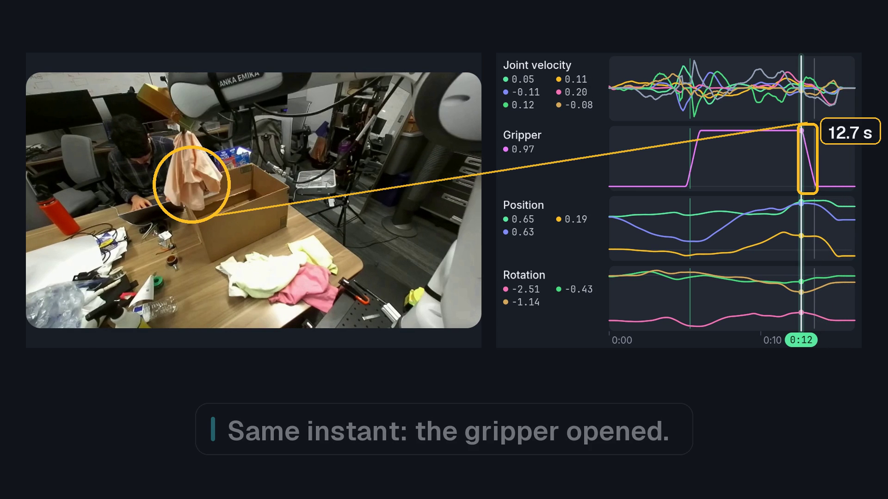
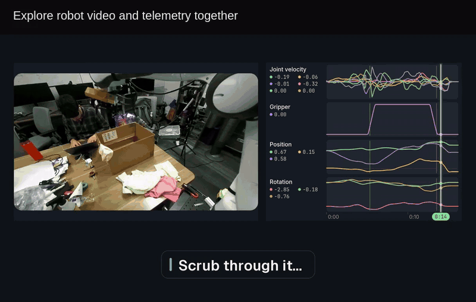
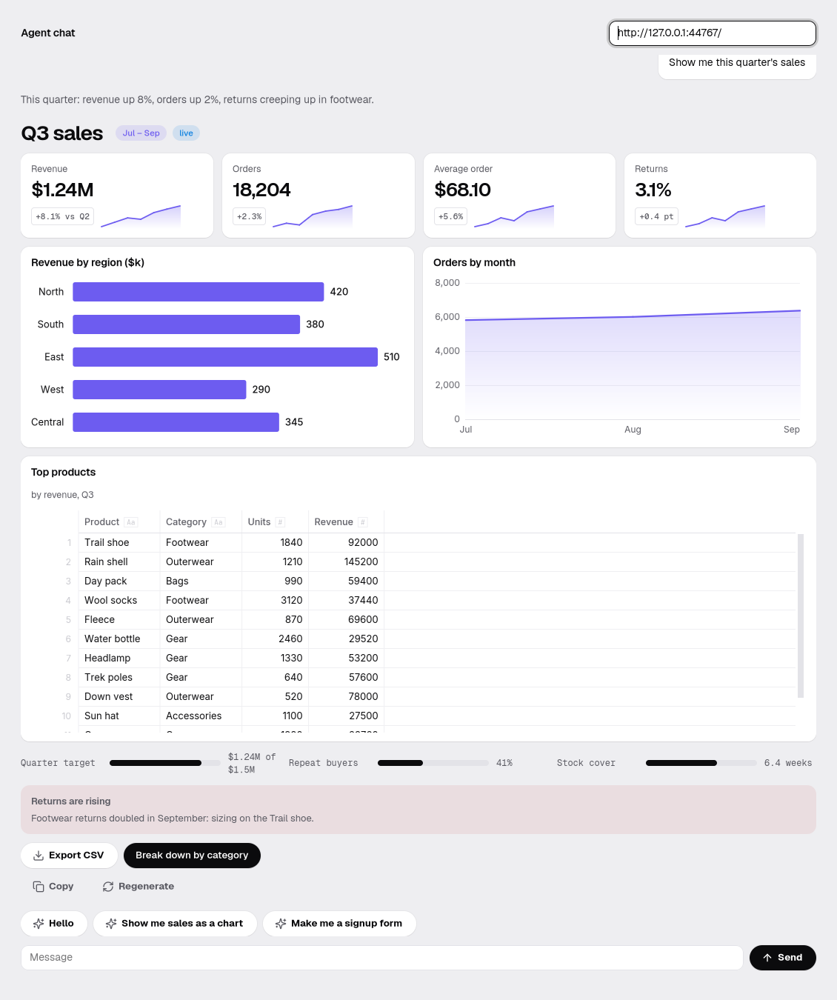

Explore the data behind the video.
omxplorer brings tables, charts, video and models into the same native workspace.
Public alpha · MIT · built in Mojo
Write the interface, data work and GPU kernels in Mojo. Give people a native app and agents the same actions as tools.
Linux and Apple Silicon Mac downloads · setup and platform notes in the README

Built with omxcode

omxplorer brings tables, charts, video and models into the same native workspace.

Agents can use app controls as tools, or stream screens built from native components.

omxconsole finds, downloads, serves and benchmarks local models. Built with the same framework.
Download an app, try it on your machine and tell me what works—or what needs work. Bug reports, ideas and contributions are welcome.
Setup in the README · First-app tutorial · Components · Under the hood